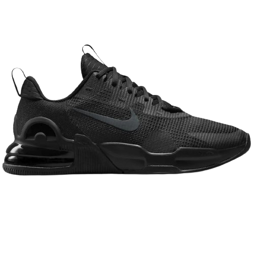

O Nike Air Max é um icônico tênis de estilo urbano que se destaca por seu design inovador e atemporal. Lançado originalmente na década de 1980, o Air Max rapidamente ganhou popularidade além das pistas de corrida, tornando-se um símbolo da cultura streetwear.
O design distintivo do Nike Air Max apresenta uma silhueta de perfil baixo ou médio, com uma parte superior que varia de acordo com o modelo, utilizando materiais como malha, couro e camurça, frequentemente em uma combinação de cores vibrantes. A característica mais marcante do Air Max é a unidade de amortecimento visível na sola, que não só adiciona um elemento estilístico único, mas também oferece conforto e suporte excepcionais.
Além de seu apelo estético, o Nike Air Max é valorizado por sua durabilidade e conforto, tornando-o um calçado versátil adequado tanto para o uso casual quanto para atividades mais exigentes. Ao longo dos anos, o Air Max evoluiu com diversas colaborações e edições especiais, mantendo-se relevante e admirado na cena da moda urbana global.